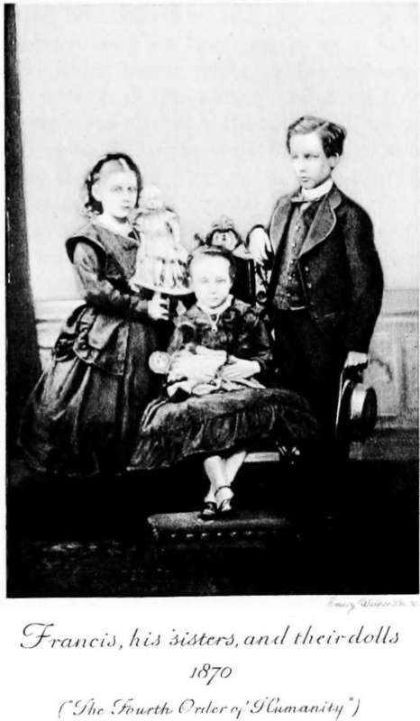

The Child. Part 4
Description
This section is from the book "The Life Of Francis Thompson", by Everard Meynell. Also available from Amazon: The life of Francis Thompson.
The Child. Part 4
Another recollection :-
" I understood love in Shakespeare and Scott, which I connected with the lovely, long-tressed women of F. C. Selous' illustrations to Cassell's Shakespeare, my childish introduction to the supreme poet.1 Those girls of floating hair I loved; and admired the long-haired, beautiful youths whom I met in these pictures, and the illustrations of early English History. Shakespeare I had already tried to read for the benefit of my sisters and the servants ; but both kicked against' Julius Caesar' as dry-though they diplomatically refrained from saying so. Comparing the pictures of mediaeval women with the crinolined and chignoned girls of my own day, I embraced the fatal but undoubting conviction that beauty expired somewhere about the time of Henry VIII. I believe I connected that awful catastrophe with the Reformation (merely because, from the pictures, and to my taste, they seemed to have taken place about the same time)."
He " first beheld the ocean " at Colwyn Bay when he was five years old. It was there that the Thompsons spent their holidays, several excursions there during a year keeping them in touch with the sea. Its sunsets are still remembered by Mother Austin, his sister, in her convent in black Manchester, where her skies .are for the most part locked behind bricks or otherwise tampered with. Remembered by this sister as particularly attracting Francis is "the phosphorescence on the crest of the waves at dusk." Her memory is good, for I find in a long mislaid note-book the following verse of an early epithalamium:-
The mighty waters of his soul
Beat on her strand and break in fire;
Her spirit's shore, on which they roll, 4
Bursts into answering desire
From all its trembling depths together, Till their encountering souls illume
The nuptial curtaining of gloom.
1 A photograph (now missing), taken at the age of eleven or twelve, shows Francis with a small bust of Shakespeare-the treasured gift of his mother. In all the early photographs he conforms to one early description-" a boy known for his piety, obedience, and truthfulness"-and he is tidy, too!
He Beholds The Ocean
He adds, " I do not know whether the image is altogether clear to the ordinary reader, as it was in my own mind. Anyone, however, who has ever seen on a dark night a phosphorescent sea breaking in long billows of light on the viewless beach, while, as the hidden pools and recessed waters of the strand are stirred by the onrush, they respond through the darkness in swarms of jewel-like flashes, will understand the image at once."
The sea was there, and Francis bathed, timidly and always with the consecrated medal that was still round his neck when he died. He would not strip it from its place, and his sister, only less pious, would laugh at his anxiety concerning it. On the beach brother and sister would score Hornby's centuries. That was the chief use and joy of the sands to the enthusiasts; the whole series of triumphs would be thus shiftingly writ in full particularity. To Colwyn Bay he went before Ushaw, during the holidays and after he left college, and he went also to Kent's Bank, near Ulverstone, to Holyhead and New Brighton, so that it may be wondered why his poetry harbours so few seas. Topographically, his verse is very bare of allusion. The chapter of his childhood must close without the benefits of such witness, unless, as indeed it should be, the whole body of his poetry is taken as the evidence of his teeming experiences. Only in a nonsense verse found in his note-book (where doggerel keeps close, as the grave-digger to Hamlet, to the exquisite fragments of his poetry, so that strings of puns must be disentangled from chains of images) does he confess the place-names of his childhood. Runs the doggerel :-
All along the gliding Lyne
They told the nymphs of mislaid wine,
And only by the mooney Med
They found it had got in the driver's head.
But even early experiences are rare. In "Dream Tryst" one is employed. He was eleven, older by two years than Dante smitten with love in Florence, when he met the Lucide" of that poem in Ashton-under-Lyne. She was a school-friend of his sister, and tells me she had no knowledge of Francis's admiration.1
It may not be supposed that Francis was too busy collecting lore of Hornby's centuries or other boyish excitements to be moved by nature; he tells little of his early childhood's experiences because he was moved only to meditative dumbness, whereas later, when he knew he was a poet, each experience, however fleeting, smote upon his heart as a hammer on an anvil, and the words flew from each immediate stroke. He was too full of emotional adventures when he was sent, after his trials, to Storrington and Pantasaph to need to ransack the unmeaning confusion of his early impressions. Childhood proper was snatched from him when he became a schoolboy. His childhood he had called the true Paradisus Vitae, and he would have combated the convention that school-days are the happiest of one's life. In an essay on his own childhood it had been his intention to include an account of his first year at Ushaw for the sake of contrast with his home existence, telling of the " refugium or sanctuary of fairy-tales, and dream of flying to the fairies for shelter " that he made there.
1 '1 Dream Tryst" was afterwards alluded to by Mr. Edward Healy Thompson as " erotic "-a poem, explained Francis, "addressed to a child. Nay, hardly that-to the memory only of a child known but once when I was eleven years old."
Continue to: